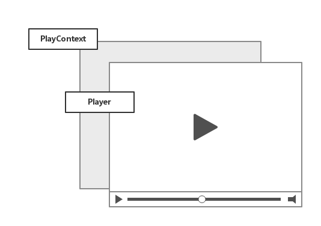
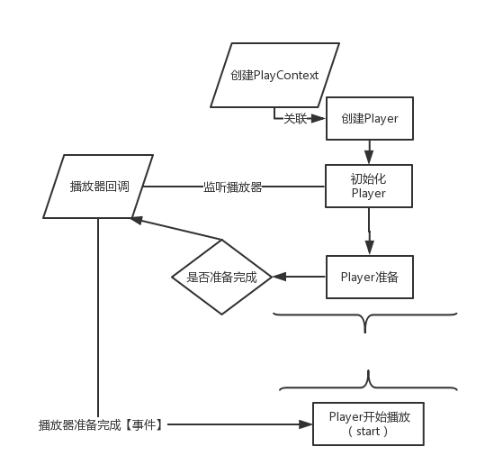

简介
1.
快速开始
1.1.
集成工程
1.2.
demo运行效果及使用
1.3.
启动播放器
1.4.
处理视频比例
1.5.
处理屏幕旋转
1.6.
全景播放
1.7.
关于混淆
2.
第一章
2.1.
播放器基本架构
2.2.
LetvPlayer播放器API说明
2.3.
PlayContext ApI说明
3.
下载模块
3.1.
快速接入
3.2.
DownloadCenter API说明文档
3.3.
LeDownloadObserver API说明文档
3.4.
LeDownloadInfo API 说明文档
4.
更新说明
5.
Q&A
Published with GitBook
简介
播放器基本组成
sdk所有业务都围绕着播放器进行展开，在这里Letvplayer有两部分组成
Letvplayer： 播放器本身，开发者通过api可以控制播放器、获取播放器状态。
PlayContext：播放器上下文，通过上下文可以获取到播放器运行时的一些参数，或者设置某些属性

LetvPlayer播放器基本流程
